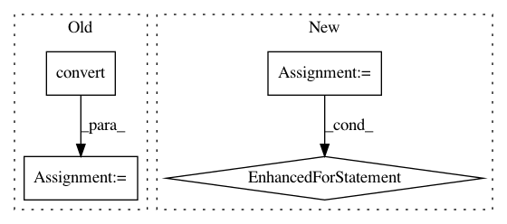

8d9e41ce407e88ec3404602d26bc7b019e31ffc2,OpenNMT/train.py,,eval,#Any#Any#Any#,111
Before Change
model.evaluate()
for i in range(data.batchCount()):
batch = onmt.utils.Cuda.convert(data.getBatch(i))
outputs = model.forward()
loss = criterion.forward(outputs, batch.getTargetOutput())
total = total + batch.targetNonZeros
model.training()
return math.exp(loss / total)
After Change
model.evaluate()
for src, tgt in data:
outputs = model.forward(src)
loss = criterion.forward(outputs, tgt)
model.training()
return math.exp(loss / data.len)
In pattern: SUPERPATTERN
Frequency: 4
Non-data size: 4
Instances
Project Name: OpenNMT/OpenNMT-py
Commit Name: 8d9e41ce407e88ec3404602d26bc7b019e31ffc2
Time: 2016-12-26
Author: alerer@fb.com
File Name: OpenNMT/train.py
Class Name:
Method Name: eval
Project Name: mittagessen/kraken
Commit Name: 4b5a73270f473a3ac35318484c0033886da92ff6
Time: 2020-03-04
Author: mittagessen@l.unchti.me
File Name: kraken/contrib/repolygonize.py
Class Name:
Method Name:
Project Name: mittagessen/kraken
Commit Name: d91a666123809f191084b1c7199cd38c8e8f1be2
Time: 2020-03-04
Author: mittagessen@l.unchti.me
File Name: kraken/contrib/repolygonize.py
Class Name:
Method Name: